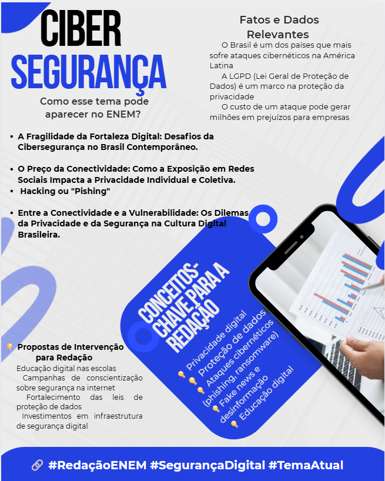

Temas para redação do enem

Cibersegurança
A cibersegurança tornou-se essencial na era digital para proteger dados pessoais e corporativos diante do aumento constante de ameaças cibernéticas, como phishing e ransomware. Tanto indivíduos quanto empresas precisam adotar práticas rigorosas de segurança e manter-se constantemente conscientes dos riscos presentes no ambiente online. Essa responsabilidade coletiva visa preservar a privacidade, garantir a confiança nas plataformas digitais e manter a estabilidade das interações virtuais, sendo um fator decisivo para o progresso tecnológico no século XXI.
1) Aumento das ameaças cibernéticas
Com a crescente digitalização das atividades cotidianas, as ameaças cibernéticas também têm se multiplicado. Ataques como phishing, ransomware e invasões de sistemas têm se tornado mais sofisticados e frequentes. Isso evidencia a necessidade de práticas de segurança robustas para proteger dados pessoais e corporativos, prevenindo prejuízos financeiros e danos à reputação.
2) Proteção da privacidade pessoal e corporativa:
A proteção da privacidade é fundamental na cibersegurança, já que dados pessoais e informações sensíveis de empresas são alvos frequentes de hackers. Para evitar prejuízos e manter a confiança dos usuários, é essencial adotar medidas como criptografia e autenticação multifatorial, garantindo a segurança e integridade das informações.
3) Impacto econômico de um ataque cibernético:
Ataques cibernéticos podem causar grandes prejuízos às empresas, tanto financeiros quanto na perda de clientes e credibilidade. Além dos custos diretos, como resgates e recuperação de dados, há riscos de multas e processos judiciais. Por isso, investir em cibersegurança é uma forma essencial de prevenir esses danos.
4) Desafios em um ambiente digital globalizado:
A conectividade global aumentou a interdependência e a vulnerabilidade no ambiente digital, dificultando a regulação e a resposta a ataques cibernéticos. Diante disso, é essencial que empresas e indivíduos adotem medidas como atualizações de software e uso de firewalls para se protegerem em uma rede mundial interconectada.
5) Confiança no ambiente digital:
A cibersegurança é essencial para manter a confiança dos usuários nas plataformas digitais. Quando os dados são comprometidos, a confiança nas transações online diminui. Por isso, boas práticas de segurança garantem interações seguras, fortalecendo o comércio eletrônico, a comunicação digital e outras atividades online.
6) Evolução tecnológica e a necessidade de adaptação constante:
À medida que a tecnologia avança, as ameaças também se tornam mais complexas. Ferramentas de inteligência artificial, Internet das Coisas (IoT) e dispositivos conectados estão cada vez mais presentes na vida cotidiana, o que amplia as vulnerabilidades. Isso exige uma adaptação constante das práticas de cibersegurança, com a implementação de tecnologias emergentes e a formação contínua dos profissionais de TI, a fim de mitigar novos riscos à medida que surgem.